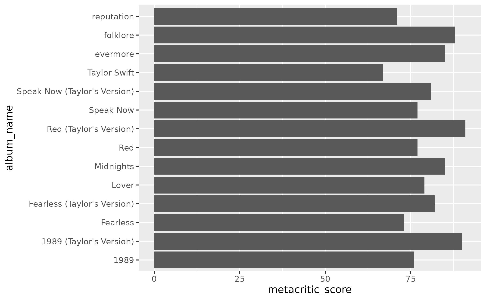
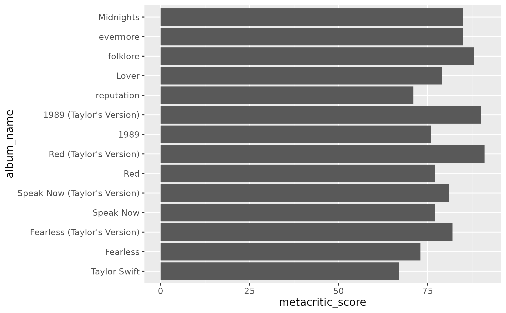

Easily create a factor variable for Taylor Swift's albums. Rather than specifying each album individually, you can use this shortcut vector that has already specified the ordering.
Format
A vector of length 11. Each element is an album name, in an order that can be used for making factor variables.
Details
Albums are listed in release order, with one notable exception. The
"Taylor's Version" releases are list directly following the original. That
is, Fearless (Taylor's Version) comes directly after Fearless, rather
than after evermore, when it was released. This is because
"Taylor's Version" is often a stand-in for the original, as in
taylor_album_songs. Thus, it more often makes more sense for the album to
be placed with the original, rather than in the actual release order.
Examples
library(ggplot2)
studio_albums <- subset(taylor_albums, !ep)
# by default, albums get plotted in alphabetical order
ggplot(studio_albums, aes(x = metacritic_score, y = album_name)) +
geom_col()

# use `album_levels` to create a sensible factor variable
studio_albums$album_name <- factor(studio_albums$album_name,
levels = album_levels)
ggplot(studio_albums, aes(x = metacritic_score, y = album_name)) +
geom_col()
